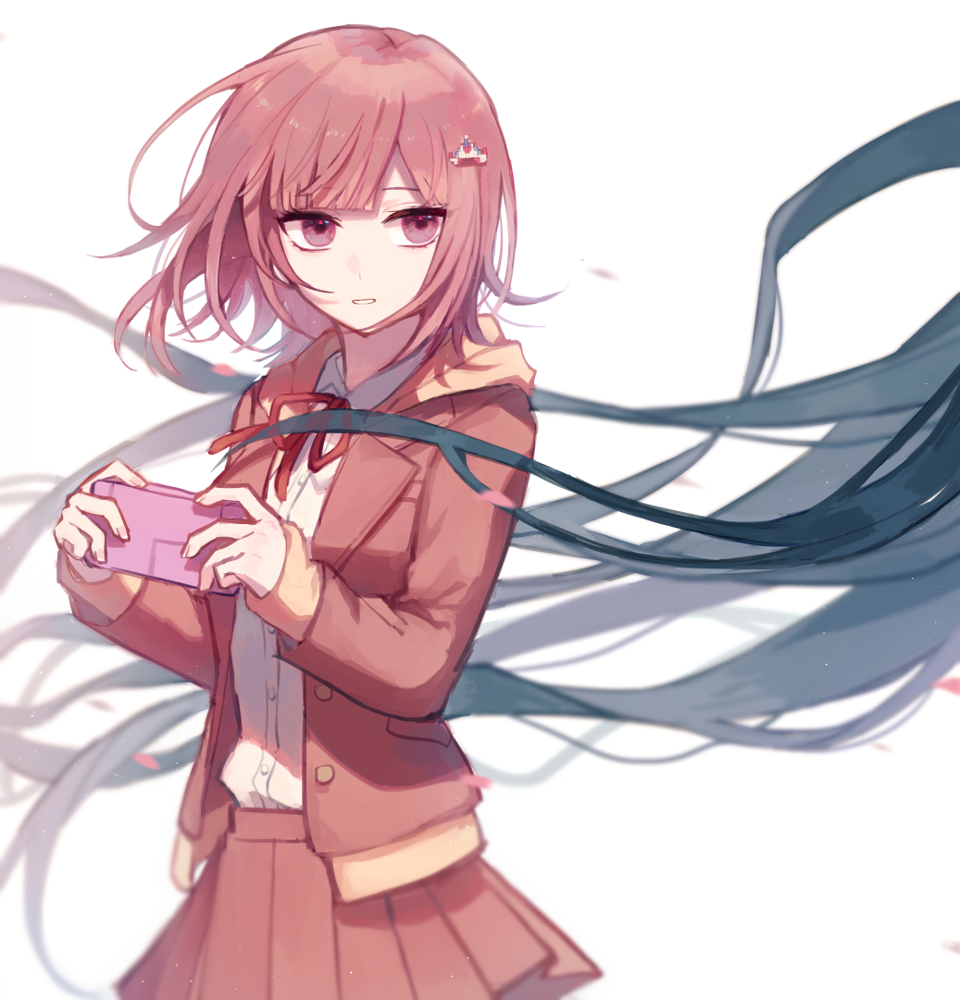

<body>
	
	<p>Chiaki normally has a quiet and sleepy disposition, but she becomes a lot more lively when discussing games and concentrates hard when playing. She has a number of unusual habits, such as dozing off while playing games and taking long pauses during her conversations to think about everything she wants to say. She sometimes even sleeps while standing and forgets to breathe when she's playing games. She also quite often uses gaming terms and references.\n\nChiaki is very calm and she once mentioned that she has never screamed. She often helps Hajime Hinata during the Class Trials and provides important points. She can be stern and bluntly honest, even at times forgetting to take other people's feelings into consideration.\n\nWhile Chiaki is extremely observant and analytical, she lacks knowledge on a variety of ordinary subjects due to the nature of her existence. For example, she doesn't know where milk comes from (she mentions that she knows how babies are made, though). She doesn't really understand how romance or love works, is very curious about it. She also feels a bit uncomfortable around animals, because they're unpredictable and feel warm when touched, which is \"a bit scary\" in her opinion. She is occasionally a bit playful and tries to make jokes or play little pranks on Hajime, though they're a bit weird and sometimes borderline creepy.\n\nChiaki usually ends her sentences with a negative note even though she actually means to compliment someone or cheering someone, such as \"...I think\", or \"Maybe...\". Hajime once said that sometimes he wishes that Chiaki would end her positive sentence on a positive note. However, she truly does care about and wants to protect everyone. She dislikes killing more than anything and she gets very serious about the topic. She is the nicest towards Monomi and she is very understanding towards Nagito Komaeda, even though his actions frustrate her.\n\nWhile she is based on some of human Chiaki's traits, AI Chiaki differs from her in some ways. Unlike the human, she appears constantly sleepy and her way of speaking is much less natural sounding. As an AI she also appears unusually calm and unfazed, even during her own execution, which is very different from the human Chiaki's much more human and painful reaction. She also has her own identity as an AI created by Chihiro, considering him her \"dad\" and Alter Ego and Usami her siblings. Some of Chiaki's behavior also appears a bit childlike, most notably her handwriting and drawings that resemble ones of a young child, which could be a result of her being a relatively young AI. However, she matures throughout the course of the game and in the end, she even seems to be able to resist her programming, albeit just a little bit.\n\nChiaki stayed unusually calm in upheaval, such as when Usami revealed herself and when Monokuma took over the island from Usami and began the Killing School Trip. She did not believe anyone would kill, however.\n\nWhen Hajime first sees her, she is deeply engrossed in a game at the Hotel Lobby, only stopping after Nagito calls her. She awkwardly introduces herself, Hajime stating that she isn't very good at conversations. Nagito then says that Chiaki is still playing the game, to which she agrees and she also states that she needs to compose what she's going to say in her head. Chiaki then states she's tired, ending the conversation.\n\nIn the first chapter, Chiaki was worried about Monokuma infiltrating the party that the Ultimate Imposter arranged, so she stood guard outside the old hotel lodge alongside Monomi in order to keep Monokuma out of it.\n\nChiaki encountered Fuyuhiko Kuzuryu, who happened to walk by the lodge (though she suspected that Fuyuhiko actually did want to join the party). Because Chiaki was his alibi, knowing he did not enter the lodge, he was exonerated from murder suspicion. Chiaki also played an important role along with Gundham Tanaka, discovering a space under the lodge which the culprit had used as a spot to commit the murder.\n\n</p>
</body>